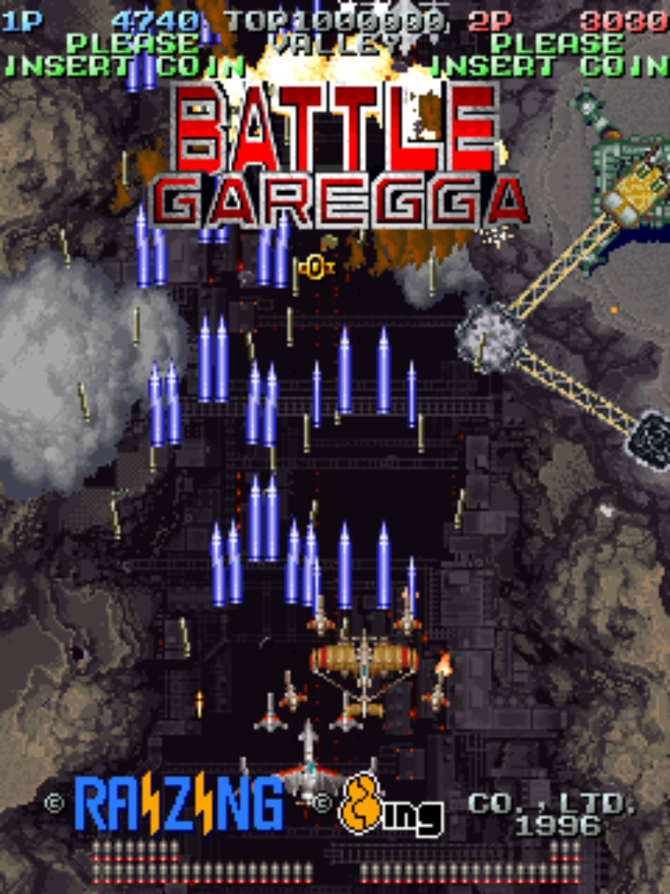

Raizing’s “Battle Garegga” is an extremely difficult, yet rewarding bullet hell shooter. While immediately appealing with its dark, yet energetic visual design and pounding Detroit techno soundtrack, I can’t imagine someone going into this game without any knowledge of the systems hidden in this game (as nearly all players in the arcade must have, back during the release of this game). The enigmatic Rank System, a dynamic difficulty system that makes the game impossible to beat without intentionally running into bullets, is integral to the game’s identity and playing the game at a high level. Battle Garegga flies in the face of so many established game design rules, and in the process becomes a mad project of hidden variables and arcane strategies. Players with the patience to learn the game’s systems are rewarded with deep strategization and execution challenges. A truly unique and beautifully designed game.
The game makes few compromises and breaks established game design rules to establish its own identity. Battle Garegga is meant to be an extremely difficult and uncompromising game, and Raizing’s design strongly communicates this. An example: bullets in this game are very hard to see. They’re small, and they’re coloured realistically, so they also blend in with the muted background and scraps of planes scattering across the screen. And yet in Battle Garegga, I can accept it as another facet of the game’s design. Raizing thought that making them harder to see was the ideal design choice for this game, and forces the player to meet them on their own terms. The magic word is intent: it’s clear the developers intended for this to be the case, so these elements don’t feel unfair. Not only that, it motivates me to improve at the game, to step up to a challenge posed by the developers.
Gameplay mechanics are archaic, but also result in more rewarding gameplay strategies. There’s no intuitive explanation why missing powerups should give the player different option formations. The average player would never even think to do such a thing intentionally, let alone realize such a mechanic exists. But it does exist, and players who discover this aspect of Battle Garegga have another subtlety in their game plan that integrates with gameplay in an abstract, yet excitingly innovative way.